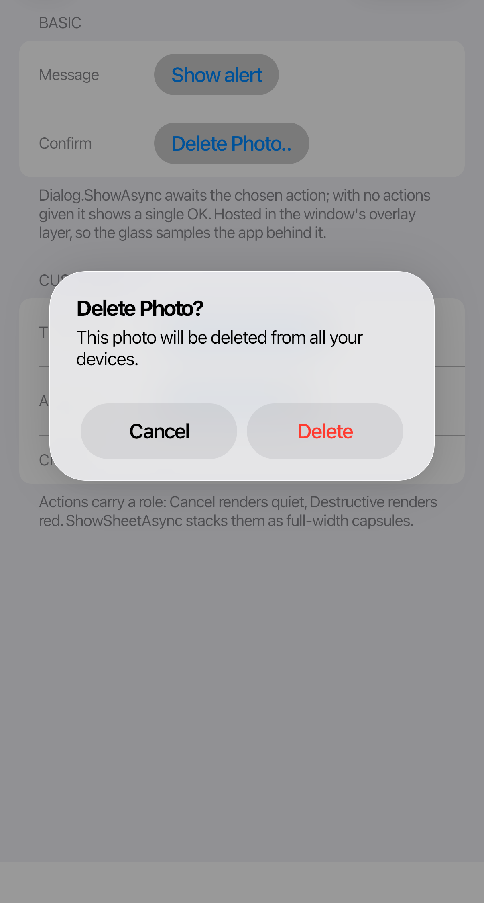
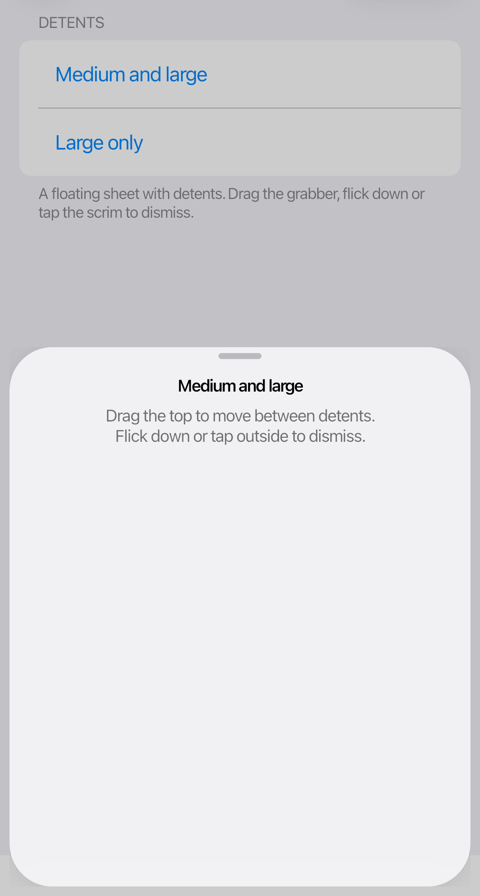

Dialogs and sheets
 |
 |
Dialogs
Dialog.ShowAsync returns the selected DialogAction. Each action's role controls its styling and initial focus.
var result = await Dialog.ShowAsync(
this,
"Delete Photo?",
"This photo will be deleted from all your devices.",
new DialogAction("Cancel", DialogActionRole.Cancel),
new DialogAction("Delete", DialogActionRole.Destructive));
if (result?.Role == DialogActionRole.Destructive)
DeletePhoto();
Dialogs stack actions vertically when there are more than two. Use ShowSheetAsync to present an action sheet.
Sheets
CupertinoSheet can show any Avalonia content. With MediumAndLarge detents, it opens at medium height and can expand. A large-only sheet opens near full height.
await CupertinoSheet.ShowAsync(
this,
new DetailsView(),
SheetDetents.MediumAndLarge);
Users can dismiss a sheet by dragging or flicking down, tapping the dimmed background, or pressing Escape. Tab and Shift+Tab keep focus inside the sheet; closing it restores the previous focus when possible.
Keep content clear of the grabber and check the layout at every enabled sheet height.